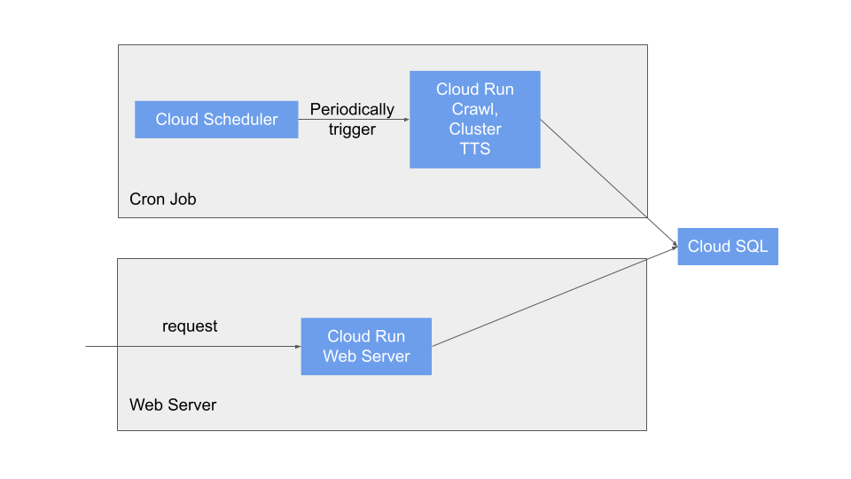
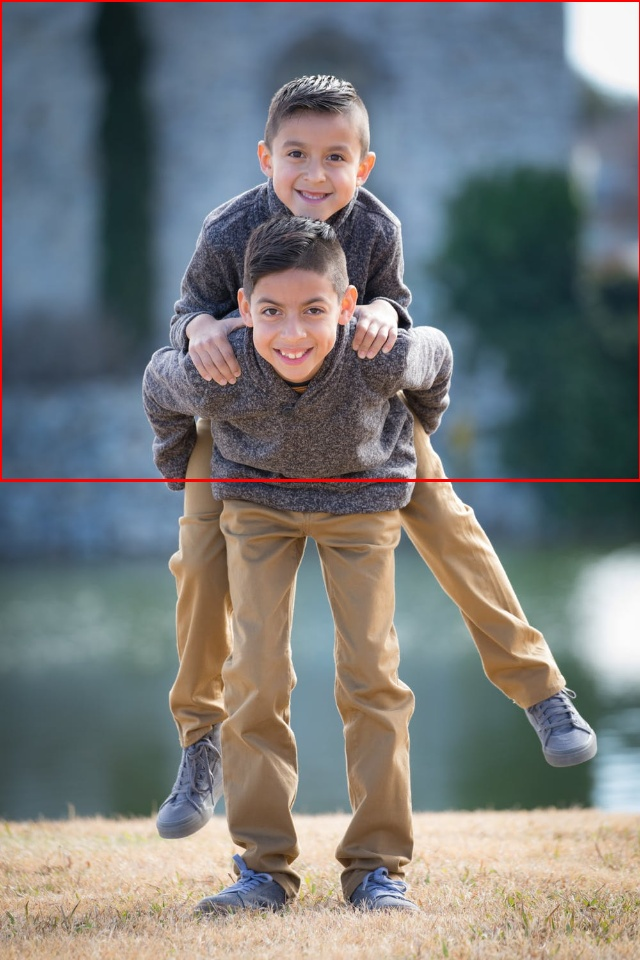
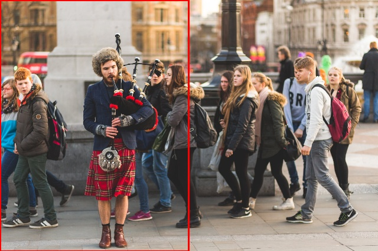

Hi! I-Ping Ou here. I am easy-going and communicative, and am interested in machine learining, data analysis and anything related to data.
EDUCATION
NATIONAL TAIWAN UNIVERSITY
MASTER OF ARTS IN SOCIOLOGY
Febuary 2018
Sociology
BACHELOR OF BUSINESS ADMINISTRATION
June 2015
Information Management
BACHELOR OF ARTS IN SOCIOLOGY
June 2015
Sociology
NATIONAL YILAN SENIOR HIGH SCHOLL
SCIENCE
June 2010
CAMPBELL COUNTY HIGH SCHOOL, USA
EXCHANGE STUDENT
September 2008 - June 2009
EXPERIENCE
Machine Learning Engineer
Taiwan AI Labs
April 2019 - Present
- Reponsible for training machine learning models and deploying models as web APIs.
- News Classification: training a news classification model to categorize news into categories such as politics, sports, entertainment, etc.
- Word Segmentation and Named Entity Recognition: training a sequence tagging model for Chinese word segmentation and named entity tagging. Model used for downstream task such as news clustering and news person name recognition.
- Television News OCR and Segmentation: This project employs CV models to extracts texts from television news reels, and then a NLP model is used to classify texts into news title, news transcriptions, location, etc. After text extraction and classification, another model is employed to detemine where each news segment begins and ends.
- Question Answering: Two stage question answering model trained on DRCD and manually labeled data. In the first stage, articles are retrieved from ElasticSearch with tfidf based scoring. After retrieval, a ranking model is used to re-rank articles for relevancy. Reading comprehension is performed on the top ranked articles, and the final answer is acquired by a weighted score of ranking and reading score. This model is deployed as a slack bot to help employees retrieve information such as address and phone number.
DATA ENGINEER
Breaktime Inc.
April 2018 - March 2019
Training models for text classification and automatic image cropping...etc. Building API for models. Reading papers and Internet resources for modeling problems. Creating cronjobs for daily report and ETL. Scrapping the web and storing text data into ElasticSearch. Helping testing and POC Hadoop system.
PROJECT
NEWS BRIEFS
This project is inspired by my own habit of listening to news briefing podcasts such as BBC World News every morning. These news podcasts help me keep up with the world, and also they are perfect commute entertainment. However, I have not been able to find a Taiwnese version of these news podcasts, hence this project!
I use scrapy to crawl four major Taiwanese papers. Then cluster algorithm are applied to group similar news together to determine which news are more important than others. The heuristic is to choose larger groups as daily brief items since they are likely to reflect events that are covered by most media outlet. I also utilize TensorflowTTS to generate audio file corresponding to above mention news briefs.
I choose GCP to host my service. The artchitecture is as below.
I want to deploy my services with containers, yet I do not want use virtual machines or a kubernetes cluster since cron jobs is periodical by nature, and will be idle for most of the day, and the time the machines stay idle is a waste of computing power and ... money. Therefore, I choose Cloud Run for both cron jobs and the web server.
The cron job Cloud Run service is a Flask server, with two endpoint, crawl and cluster. When accessed, they trigger the server to crawl the web and cluster news and generate audio files respectively. How are they triggered? I use Cloud Scheduler to send HTTP request to these two endpoints periodically, so the combo of Cloud Scheduler and Cloud Run amounts to a very cheap cron job service.
The web server Cloud Run service is another Flask server which hosts the website. This website retrieve news briefins and audios for end users.
AUTOMATIC IMAGE CROPPER
This model utilizes saliency prediction, face detection, and an aesthetic ranking model to select the best cropping of an image for a given aspect ratio. Both the saliency model and ranking model uses transfer learning, ResNet for the former and VGG for latter. Face detection is achieved by OpenCV.
| # | Saliency Map | Bounding Box | Crop |
|---|---|---|---|
| 1 | |||
| 2 |  | ||
| 3 |  |
TEXT CLASSIFICATION
This model uses both CNN and gradient boosting tree for text category prediction. I collected data using scrapy, and extract article contents by identifiying related XPath. Data are then preprocessed using jieba and scikit-learn for segmentation and tokenization respectively.